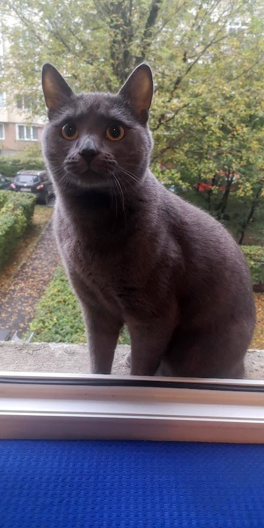
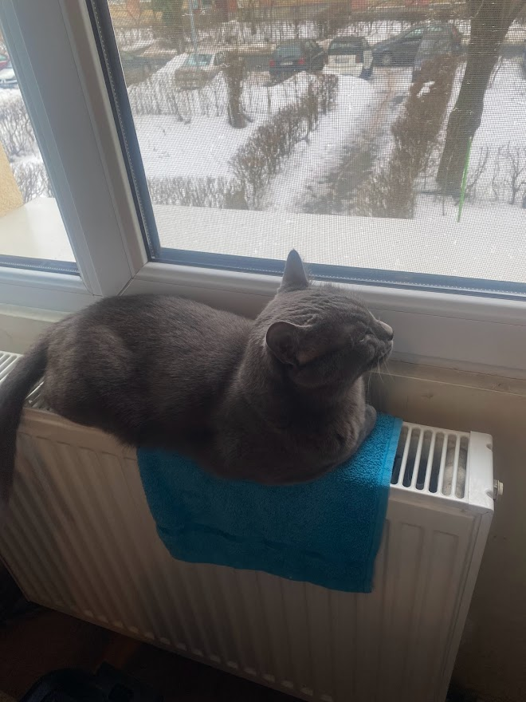

About:
The Russian blue cat appears to be larger than she is because of her extremely dense, soft double coat. She may be a good choice for pet parents with allergies because she doesn't shed much and produces lower levels of the glycoprotein Fel d 1, a known allergen, than other cat breeds. With her triangular-shaped head, the Russian blue is a long and slender cat. She is fine-boned with large ears, a broad forehead and straight nose, making her a very regal animal. Russian blues are known for a natural "smile." In addition to her luxurious silvery coat, her most distinct features are her brilliant green eyes. Despite being slender, the Russian blue is very strong and muscular, although her thick fur often hides her neck and shoulders, giving the impression that her frame is more robust. Her long legs allow her to run at high speeds.Personality:
The Russian blue is a sweet-tempered, loyal cat who will follow her owner everywhere, so don't be surprised if she greets you at the front door! While she has a tendency to attach to one pet parent in particular, she demonstrates affection with her whole family and demands it in return. It's said that Russian blues train their owners rather than the owners training them, a legend that's been proven true time and again. They are very social creatures but also enjoy alone time and will actively seek a quiet, private nook in which to sleep. They don't mind too much if you're away at work all day, but they do require a lot of playtime when you are home. Russian blues tend to shy away from visitors and may hide during large gatherings.Living with:
Russian blue cats are highly intelligent animals and require physical and mental stimulation, so it's important to give them access to toys at all times. They retain a strong hunting instinct, so a feathered fishing pole toy is the perfect plaything. Consider storing these types of toys in a cat-proof spot because: (a) your kitty will tear it to shreds, and (b) she may eat the feathers and/or the string, neither of which are good for her digestive system or overall health. If you maintain a good hygiene routine, your Russian blue will require minimal grooming and healthcare.
